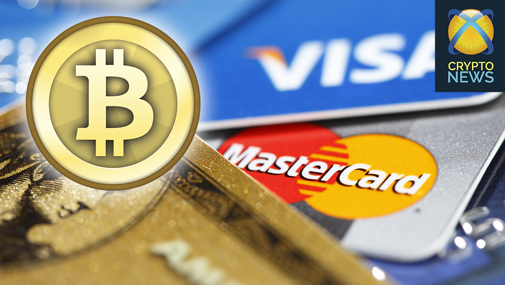

Первой децентрализованной криптовалютой был биткоин, который сейчас является наиболее широкоиспользуемым и самым известным криптографическим токеном в мире. Биткоин был создан в начале 2009 года. Именно тогда его автор — некто под псевдонимом Сатоши Накамото — запустил сеть и первые биткоин-кошельки. Некоторые отсчитывают момент создания биткоина с момента публикации Сатоши манифеста биткоина в октябре 2008 года, в котором этот аноним описал основной принцип работы и регулирования децентрализованной сети. Кто именно создал биткоин до сих пор неизвестно. Автор так и не раскрыл свои реальные данные и самоутранился от работы над проектом в 2010 году, оставив на своем кошельке один миллион биткоинов. Найти его до сих пор не удалось, платежи с кошелька не производятся.
Биткоин же продолжил жить своей жизнью и сейчас принимается в качестве альтернативного метода оплаты тысячами организаций и предприятий по всему миру. К этому списку можно причислить такие компании и ресурсы как Microsoft, WordPress, Reddit, Subway, Namecheap, Expedia, Newegg, Steam, Wikipedia, Zynga, Whole Foods, Bloomberg, Suntimes, Shopify. И это только начало крайне длинного списка.
Биткоин свободно обменивается на другие криптовалюты или фиатные (обычные, эмитируемые государственными банками, — прим. ред.) валюты. Также он торгуется на специализированных криптовалютных биржах, таких как Bitfinex, Poloniex, Kraken, Coinbase или Bitstamp. Все эти площадки помогают пользователям хранить их криптовалюты, а некоторые из них предлагают даже удобные мобильные кошельки для носимых устройств (смартфонов, планшетов), которые можно связать с учетной записью.
Но биткоин — это не единственная криптовалюта. Сейчас на рынке существует более 1000 различных криптографических токенов, которые также, как и биткоин, базируются на технологии блокчейна. Суммарно криптовалютный рынок оценивается в 150 млрд долларов. Половина этой капитализации приходится на первую криптовалюту — биткоин.
Из-за их доступности, неизменности и низких комиссий за транзакции и, потенциально, высокой скорости (вкупе с анонимностью, если необходимо), у криптовалют чуть ли не ежедневно появляются все новые и новые области применения. При этом нам только предстоит узнать, на что на самом деле способна эта технология.
С появлением на этом рынке тысяч мелких предприятий, крупных корпораций и целых государств, лишь вопрос времени, когда криптовалюты станут новым стандартом финансовых операций.
В ряде стран все эти правовые сложности уже частично решены, но техническая сложность интеграции блокчейн-решений и отсутствие ориентированных на бизнес продуктов по-прежнему являются основными препятствиями имплементации криптовалют в экономическую деятельность бизнеса. Приватный блокчейн, который строится командой Jincor, позволит бизнесу любых размеров легко включиться в криптоэкономику без каких-либо юридических, технических или эксплуатационных трудностей, при этом дешево, вне зависимости от того, планируете вы работать на B2C или B2B рынках.